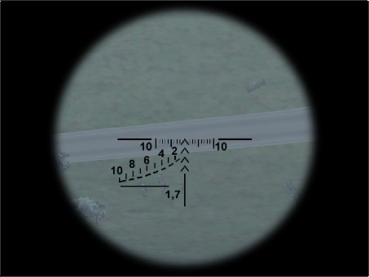
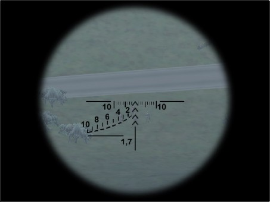
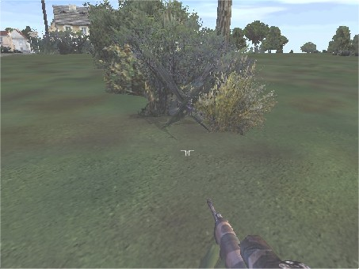

| Autor : Man Of Submarine | Ukázka není k dispozici Zpět na Tipy & Triky |
| Jak správně zamířit Dragunovem | |
| Ze všeho nejdřív musíme pomocí optiky změřit vzdálenost.Podle vzdálenosti poté zaměříme  Všimni si vojáků kteří jsou nastoupeny v lajně a před nimi bude asi kdo?Důstojník. Nebo… K nohou vojáka přiložíme tu čáru u který je napsáno 1,7.(1,7 je průměrná výška člověka) Hlava se musí dotýkat těch čárek nad ním.Pokud je nad ním číslo 2 je vzdálen 200m.Ty čísla nad přerušovanými čarami to je vzdálenost v metrech.A to znamená že voják na obrázku je vzdálen od střelce 440 metrů.  Zaměříme tedy tou druhou šipkou s menší odchylkou doprava.Lépe se střílí když je ve hře zapálen oheň podle toho kam je nesen větrem kouř podle toho vystřelíte.Když bude nesen doprava dáte odchylku doleva a naopak.Pak následuje výstřel.Po výstřelu pokud je to možné byste se měli nenápadně přemístit chvíli počkat a výstřel.Ale s těma výstřelama to moc nepřehánějte.Zabijte jen toho koho musíte.Většinou se střílí na důstojníky.  Jestli se dobře podíváte uvidíte na obrázku odstřelovače ve křoví.Zde odstřelovač udělal chybu že vystrkuje moc zbraň.A ještě je vidět jeho stín.Kdyby byl ve křoví pod stromem nestalo by se to a byl by méně viděn. |
|